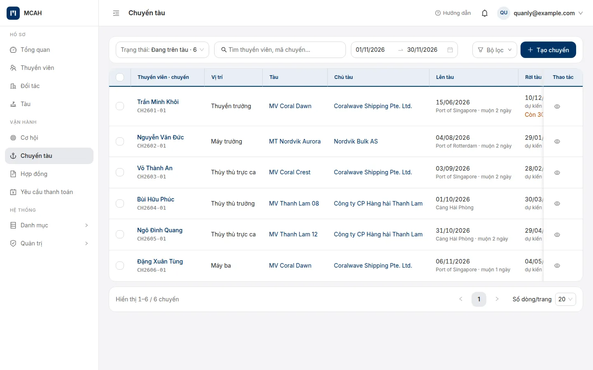

Hợp đồng và tiền
Chuyến tàu
Chuyến tàu sinh ra khi chốt người; ghi xuống tàu, rời tàu.
Mỗi chuyến là một thuyền viên đi một tàu, từ ngày xuống tới ngày rời. Chuyến ghi sự việc thật; tiền nằm ở hợp đồng. Sửa ngày của chuyến không bao giờ làm đổi tiền.

Chuyến từ cơ hội
Sinh ra khi chốt người, kèm hợp đồng nháp. Mã nối từ mã cơ hội: CH2601 → CH2601-01.
Tạo chuyến bằng tay
Bắt buộc chọn lý do: Chủ tàu tự tuyển, Nhập chuyến cũ, Khác. Nhập chuyến cũ thì bật "Chuyến đã kết thúc" để nhập luôn ngày rời. Mã dạng CT2601. Chuyến tạo tay không tự có hợp đồng.
Các thao tác trên chuyến
- Ghi rời tàu: nhập ngày, nơi rời và ghi chú. Chuyến sang Đã rời tàu, thuyền viên về Ở bờ. Hợp đồng không tự đổi (xem Rời tàu, sửa và kết thúc hợp đồng). Thông báo sau đó có lối tắt Mở hợp đồng và Tạo cơ hội tìm người thay. Chọn nhiều chuyến trên danh sách để ghi rời một lần.
- Không có thao tác chuyển tàu: thuyền viên sang tàu khác thì ghi rời chuyến cũ trước, rồi chốt hoặc tạo chuyến mới.
- Đổi ngày rời dự kiến: app giữ ngày gốc để hiện "sớm / muộn n ngày".
- Sửa ngày đã ghi khi nhập nhầm; Huỷ chốt (chuyến từ cơ hội, cơ hội mở lại) hoặc Xoá chuyến (chuyến tạo tay).
Ngày rời dự kiến còn 30 ngày trở xuống hiện nhãn vàng; đã qua mà chưa ghi rời hiện nhãn đỏ. Mỗi thuyền viên chỉ có một chuyến đang trên tàu tại một thời điểm.
ViệcQuyền cần cóThường do
Tạo chuyếnChuyến tàu · Tạo chuyến tàuMôi giới
Ghi rời tàuChuyến tàu · Bắt đầu và kết thúc chuyếnMôi giới
Sửa ngày, đổi ngày rời dự kiếnChuyến tàu · Sửa chuyến tàuMôi giới